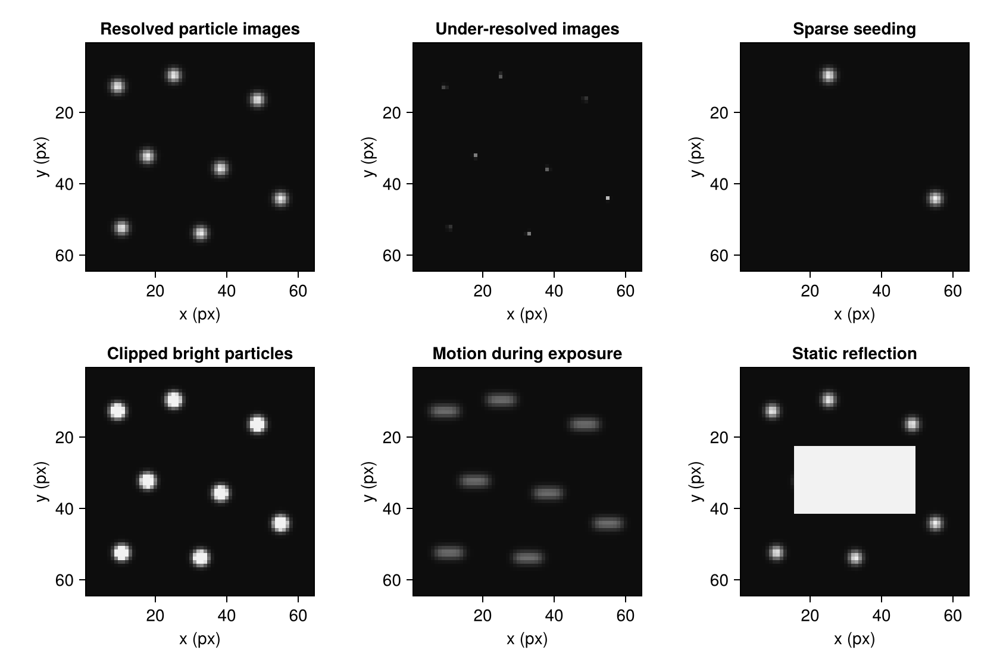

Inspect images before choosing PIV settings
Goal: decide which regions contain usable particle patterns and which acquisition or processing choices need attention. Inspect both images at native pixel resolution, including the dimmest region, the fastest flow, and any wall or reflection. A whole-frame preview can hide individual particle shapes.
Compare particle images
These illustrations use the same particle positions where possible and the same grayscale limits. Compare particle width, flat-topped bright regions, and the number of particles that would fit inside an interrogation window.

| Observation | Consequence for the measurement | What to check or change |
|---|---|---|
| Most particle images occupy only one pixel | Subpixel displacements are poorly resolved; peak locking can occur | Inspect enlarged crops and the fractional-displacement distribution with peak_locking. For a new acquisition, adjust imaging so particle images span several pixels. |
| Few particle images in a window | The correlation may have several competing peaks or no reproducible peak | Try a larger window and check whether the resulting spatial averaging is acceptable. For stationary flow, consider ensemble correlation. |
| Particle centers have a flat intensity plateau | Saturation has changed the particle shape | Check the original pixel values and camera bit depth. Reduce gain, illumination, or exposure in a new acquisition; intensity capping cannot reconstruct clipped shapes. |
| Particles form streaks | Motion during the exposure has blurred their positions | Check exposure or illumination-pulse duration. Shortening the exposure is a different adjustment from changing the delay between the two exposures. |
| A bright feature stays fixed while particles move | The feature can create a strong zero-displacement peak | Use background subtraction for a separable static background, or mask an obscured region. |
| Particles disappear or change brightness between frames | Fewer particles contribute to the same displacement peak | Check whether particles leave the image or light sheet, and compare the two exposures' illumination. A shorter pair delay may preserve more particle pairs. |
Particle-image diameter is measured in pixels; it is different from the physical tracer diameter. Whether tracers follow the fluid depends on their response time and the flow timescales. Image sharpness alone cannot establish that they are suitable tracers. These acquisition effects contribute to the measurement uncertainty (Sciacchitano, 2019).
Relate displacement to the window and timing
Estimate displacement from a few recognizable patterns in the two images, or start with a coarse pass and inspect its reliable vectors. For an initial pass with equal-sized windows, keeping displacement below roughly a quarter of the window width is a useful starting guideline: larger motion loses more particle pairs at the window boundary. It is not a hard search limit or a guarantee of a valid measurement. Enlarged search areas and multi-pass deformation change the capture conditions; see Correlation accuracy.
For a spatial calibration of 0.02 mm/px and an expected speed of 100 mm/s, a 1 ms delay gives an expected displacement of 5 px. A shorter delay gives smaller displacements, making a fixed pixel error larger relative to the motion. A longer delay can increase particle loss and the variation of displacement within a window. Try a representative fast and slow region before selecting one delay for an entire recording.
Use the delay between the paired illumination pulses or exposures for velocity conversion. The time between successive image pairs sets the sampling interval for time-series analysis and may be much larger. Keep both in the acquisition metadata; the sequence tutorial uses them separately.
Choose what the result must resolve
A 32 px window with 50% overlap places vectors every 16 px, but those vectors still use particle patterns across 32 px windows. Increasing overlap adds sample locations; it does not make each measurement independent or reduce its interrogation footprint. Strong gradients within that footprint can broaden the correlation peak and bias the displacement (Westerweel, 2008).
Compare two final window sizes on the same images and inspect a velocity profile through the feature of interest. Check rejected-vector counts as well as the profile: a finer grid is useful only where sufficient particle information remains. The tip-vortex tutorial works through this comparison.
Keep a run log alongside the result with the full pass schedule, overlap, validation settings, input mask, spatial calibration, and both the image-pair delay and field-sampling interval. A result stores its measured fields, but these acquisition and processing choices are needed to reproduce and interpret them. Assess correlation quality, sensitivity to settings, and physical plausibility together.